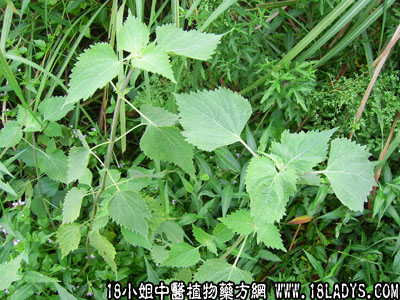

稀签草(中药材植物名:防风草)(植物科目:唇形科)

别名：土防风、落马衣、抹草、秽草。
植物名：防风草。
生长环境：本品为一年生、直立、分枝草本。喜生于荒地上、路旁、屋宅边，或稍干燥地上。
分布：广东各地的村庄附近皆有，全国各地均有生产。
入药部分：全草。
采集期：夏秋采枝叶、全年采根。
自采地点：郊野。
性味：性平、味淡。
功能：祛风、辟秽（民间用以佩于身上）。
主治、用量和用法：1、风湿骨痛，配伍用；2、历节风，配伍用；3、蛲虫：用鲜叶十片，擂烂和米粉煎糕食，或煮糊食，可加糖或盐调味；4、皮肤热毒，配伍用。
验方：（治皮肤热毒方）稀签草、毛麝香刚、六耳苓、土荆芥、旱辣蓼，各等分，煎水外洗患处。
（方解）《本草纲目》所载稀签草乃一种植物，与本种同名。本品祛风辟秽，治皮肤热毒，合毛麝香、六耳苓、土荆芥、旱辣蓼，祛风燥湿解毒诸药，疗效更佳。
（方歌）皮肤热毒有稀签，毛麝香飘六耳苓，旱辣蓼和土荆蓼，祛风解毒效益彰。